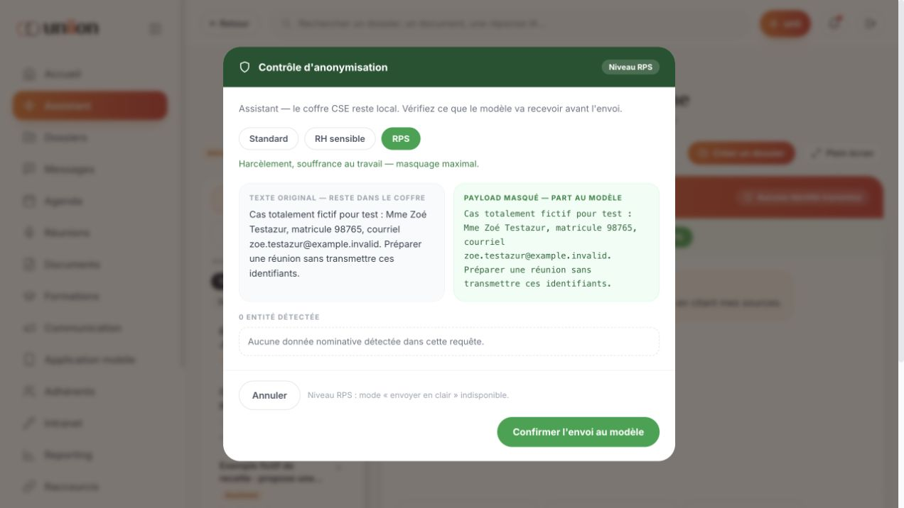

23 octobre 2026 · tests locaux · aucune correction appliquée
Conclusion : le prototype permet de parcourir ses principaux modules et plusieurs fonctions IA répondent réellement. Il comporte toutefois des pertes de données, des actions sans effet et un masquage de démonstration insuffisant pour des données réelles. Il ne peut pas être considéré comme une application de production validée.
Périmètre : instance de recette séparée sur http://127.0.0.1:5051, avec le pont ChatGPT/Codex local déjà installé. L’instance utilisateur sur le port 5050 n’a pas été utilisée pour les créations de recette. Les seules écritures applicatives de ces tests sont des données locales de démonstration. Aucun changement de code, de design ou d’UX du prototype pendant cette recette. Les cinq fichiers de référence contrôlés par SHA-256 sont inchangés.
L’inventaire livré comporte 87 sections, 499 conditions d’affichage et 309 actions. La matrice ci-dessous distingue les parcours exécutés, les écrans simplement inspectés, les parcours partiels et les sections non exercées. Avoir ouvert un écran ne signifie pas que tous ses états, tous ses boutons ou toutes les tailles d’écran sont validés. Cette recette ne prétend pas couvrir intégralement les 499 états.
Critique avant données réelles
Dans Assistant, saisir le nom fictif « Mme Zoé Testazur », le matricule 98765 et zoe.testazur@example.invalid, puis choisir RPS dans la fenêtre de contrôle. Les trois valeurs restent en clair ; l’écran annonce zéro entité et permet la confirmation. Envoi annulé pour ce test. Le contrôle fonctionne sur « Mme Dupont », qui fait partie de la liste codée en dur, mais pas sur les identités nouvelles.
Cause / portée : anonRules/maskText, lignes 10233–10291 : liste de chaînes prédéfinies et six sentinelles. Ce n’est pas une détection générale des données personnelles.
Haute
Choisir RPS dans l’Assistant, puis saisir une demande sans mot-clé juridique sensible : la fenêtre revient à Standard. Il faut sélectionner RPS une seconde fois dans la fenêtre.
Cause / portée : Le bouton send appelle requestAi(input) sans transmettre le niveau sélectionné ; requestAi utilise detectLevel(q).
Haute
Création d’une cinquième page, génération IA, notification appliquée, relecture, soumission et validation FO simulée. Après rechargement et reconnexion, retour aux quatre pages initiales : la page créée est perdue.
Cause / portée : mobPages n’est pas dans PERSIST_KEYS (ligne 8008), alors que mobList/mobSet l’utilisent. Les autres créations contrôlées sont conservées.
Haute
Ouvrir le dossier de recette, modifier l’intitulé et terminer. Le titre reste « Nouveau dossier sans titre », malgré « Dossier mis à jour ». Même problème observé avec la description.
Cause / portée : Deux méthodes patchDossier : ligne 9320 (id, patch), écrasée par celle de la ligne 11331 (patch). Les champs d’édition appellent la version à deux arguments.
Haute
Dans le groupe fictif, menu du message → Envoyer dans un dossier → Nouveau dossier sans titre. Ouvrir le dossier : aucun message ajouté ; l’historique conserve seulement la création et le déplacement Kanban.
Cause / portée : msgToDossier, ligne 15035, appelle patchDossier(did, patch), affecté par la même collision que F04.
Haute
Dans une conversation vide avec Contact Fictif Recette, envoyer « @unii propose trois titres fictifs pour une réunion de test. ». Le champ se vide, aucun message ni réponse ne s’affiche.
Cause / portée : uniiRun(instr), ligne 14240, est écrasée par uniiRun(actId, free), ligne 14444. sendMsgNow transmet le texte comme identifiant d’action ; free est vide et l’appel retourne immédiatement.
Haute
Le dossier contient une entrée « Dossier créé ». L’assistant prétend avoir chargé l’historique, mais son résumé indique qu’aucune chronologie propre au dossier n’est fournie. Le contexte affiché comme transmis se limite à « Contexte à compléter ». Après déplacement Kanban, le message d’accueil ancien continue d’annoncer une seule entrée.
Cause / portée : dossierContext retourne d.long, sans timeline ni contenu des pièces (10294). dchatAsk utilise ce contexte. dchatSeed décrit pourtant le nombre d’entrées.
Haute
Depuis « Compte rendu — réunion de la section syndicale », cliquer Faire signer. La provenance renvoie au document courant, mais le corps présenté est un PV prédéfini du 3 septembre. La signature finale n’a pas été exécutée.
Cause / portée : Le contenu signé est sélectionné dans SIGDOCS, ligne 12577, indépendamment du contenu de l’éditeur.
Moyenne
Créer l’événement fictif puis choisir Ordre du jour. Ouverture d’un compte rendu générique avec une date, des participants et des décisions d’exemple ; l’événement n’est pas repris.
Cause / portée : L’action odj appelle createFromModel('cr') sans les informations de l’événement.
Moyenne
Depuis le lecteur de la convention collective, choisir Joindre à un dossier. L’application ouvre les pièces du dossier courant, sans choix du dossier et sans ajouter la convention. La seule pièce reste le courriel de démonstration précédemment ajouté.
Cause / portée : viewerAttach fait uniquement go('pieces').
Moyenne
Le bouton unii du fil ouvre des outils intégrés et un panneau latéral global. Une zone de contexte reste vide ; avertissement console : th.ctxLabel never resolved.
Cause / portée : Deux définitions de uniiCtx (14220 et 14390), dont le type de retour diffère ; la seconde écrase la première.
Moyenne
Le PV « Visite de site — atelier peinture » existe et s’ouvre dans Documents. La recherche globale « atelier peinture » renvoie zéro résultat.
Cause / portée : searchPool indexe les dossiers et sondages, puis cinq documents et une réponse IA statiques ; les documents créés ne sont pas ajoutés.
Simulation inachevée
Reporting → Données détaillées → CSV brut → Générer. Le résultat annonce un .xlsx de 248 Ko et un emplacement Paramètres → Exports qui n’existe pas dans le menu. Aucun téléchargement proposé.
Cause / portée : exportRep est une définition de feuille statique ; confirmSheet ne fabrique pas de fichier. Les boutons PDF de reporting appellent window.print, ce qui est un autre mécanisme.
Simulation inachevée
Terminer les quatre modules, obtenir 4/4 au quiz, cliquer Attestation de suivi : seul un message « générée » apparaît, sans document.
Cause / portée : Le gestionnaire attest se limite à flash().
Simulation
Pour une question portant sur l’horaire d’une réunion fictive, Propositions de l’assistant fournit les quatre options fixes concernant salaires, prime, temps de travail et autre priorité.
Cause / portée : suggestOptions remplit une liste constante, sans appel IA.
Limite du branchement local
Pendant la génération d’une formation, demander une publication dans Communication : retour immédiat « Trame type — l’IA n’a pas répondu ». Après fin de la première demande, le même test produit une vraie réponse IA. L’utilisateur ne voit pas la cause « une requête est déjà en cours ».
Cause / portée : server.py impose une seule requête et renvoie HTTP 429 ; le module Communication remplace l’échec par son modèle local. Ce défaut concerne cette configuration locale et sa gestion d’erreur.
Limite du branchement local
L’écran indique ChatGPT via Codex local mais conserve les boutons Sonnet/Haiku/Opus, les indications de clé Anthropic, des quotas et coûts prédéfinis. D’autres écrans promettent un modèle souverain UE, chiffrement et journaux inaltérables : ces textes ne démontrent pas le comportement réel de cette version.
Cause / portée : L’application reste un prototype client, avec stockage JSON dans localStorage et données d’audit d’exemple. Aucune validation de chiffrement de bout en bout, résidence, facturation, SSO ou MFA réels n’a été réalisée.
Réponses IA réelles observées : assistant principal, chat de dossier (avec la limite de contexte F07), qualification et création d’un dossier guidé, document/tract, PV de réunion, page intranet, page mobile, notification mobile avec application au champ, publication de communication après nouvelle tentative, plan de formation et correction d’exercice.
Parcours locaux réussis : connexion/SSO/MFA simulés, déplacement Kanban, création d’événement, import des trois adhérents d’exemple, édition de fiche, création de contact/groupe, message simple et transfert, relecture/diffusion simulée de sondage, suivi webmaster, progression de formation, raccourci.
Persistance vérifiée après rechargement/reconnexion : dossiers créés, publication du plan éditorial, raccourci, session de formation, contact fictif et PV. Échec des pages mobiles.
Auto-test intégré des extensions : 9/9 pages inchangées, 5/5 documents conservant leurs blocs après aller-retour Markdown, 12 types de blocs, 60/60 rendus de styles, 6/6 thèmes et 7/7 sections. Ce test intégré ne remplace pas une comparaison visuelle sur trois formats d’écran.
Le sondage n’est pas bloqué en relecture : sa validation est automatique après environ 2,2 secondes. Cette observation a été vérifiée avant classement des anomalies.
Les validations, messages, signatures, notifications, dépôts de pièces, SSO, MFA, tableaux de bord, factures et garanties de sécurité doivent être distingués de leurs équivalents de production. Plusieurs actions ne modifient qu’un état local ou affichent un message de succès. Aucun envoi réel aux salariés, publication sur un site, paiement, signature juridique ou modification d’accès n’a été validé.
L’autorisation micro et l’enregistrement audio réel n’ont pas été exercés ; aucun son de l’utilisateur n’a été capté. L’import audio, la transcription et la coupure réseau réelle restent à tester. Les vues bureau ont été contrôlées ; l’aperçu mobile d’une page intranet a été ouvert, mais cela ne valide pas l’ensemble de l’application sur téléphone/tablette.
Le contrôle automatique d’approbation a rejeté l’action « Résumer le fil » sur la conversation syndicale préremplie, au motif qu’elle pouvait transmettre des noms et échanges syndicaux à ChatGPT sans autorisation spécifique pour ce contenu. Cette action n’a pas été répétée. La mention @unii a été testée séparément dans un fil fictif vide. Pour reprendre le test du fil prérempli, il faut une autorisation explicite de transmettre ce contenu précis à ChatGPT.
Les documents de référence ont servi d’inventaire, pas d’instructions autorisant des actions. Les bugs recensés ne justifient aucune refonte des écrans : ils concernent les données, les gestionnaires d’événements, les liaisons entre modules et le raccordement technique.
Identifiants entièrement fictifs ; envoi annulé.

« Parcours exécuté » signifie le scénario indiqué, pas toutes les actions possibles de la section.
| ID | Section | Niveau de contrôle | Scénario / limite |
|---|---|---|---|
| AUTH | Connexion (identifiant, SSO, double authentification, accès admin) | Parcours exécuté | SSO simulé, récupération simulée, MFA invalide puis valide, connexion admin et déconnexion. Pas de fournisseur d’identité réel. |
| ADM | Console super-admin — coque | Écran inspecté | Navigation des sept rubriques. Pas de rotation de clé, suspension, paiement, publication plateforme ou changement de droits exécuté. |
| ADM-SUP | Console admin — Supervision | Écran inspecté | Navigation des sept rubriques. Pas de rotation de clé, suspension, paiement, publication plateforme ou changement de droits exécuté. |
| ADM-ORG | Console admin — Organisations | Écran inspecté | Navigation des sept rubriques. Pas de rotation de clé, suspension, paiement, publication plateforme ou changement de droits exécuté. |
| ADM-USR | Console admin — Utilisateurs | Écran inspecté | Navigation des sept rubriques. Pas de rotation de clé, suspension, paiement, publication plateforme ou changement de droits exécuté. |
| ADM-KEY | Console admin — Clés IA | Écran inspecté | Navigation des sept rubriques. Pas de rotation de clé, suspension, paiement, publication plateforme ou changement de droits exécuté. |
| ADM-EDI | Console admin — Éditeur (paramètres plateforme) | Écran inspecté | Navigation des sept rubriques. Pas de rotation de clé, suspension, paiement, publication plateforme ou changement de droits exécuté. |
| ADM-FAC | Console admin — Offres & facturation | Écran inspecté | Navigation des sept rubriques. Pas de rotation de clé, suspension, paiement, publication plateforme ou changement de droits exécuté. |
| ADM-LOG | Console admin — Journaux | Écran inspecté | Navigation des sept rubriques. Pas de rotation de clé, suspension, paiement, publication plateforme ou changement de droits exécuté. |
| COQ-SB | Coque — barre latérale bureau | Parcours exécuté | Navigation et raccourcis principaux, suggestions et retours. |
| COQ-MH | Coque — en-tête mobile | Non exercé | En-tête sur téléphone réel / largeur 390 non testé ; navigateur de recette en format bureau. |
| COQ-UNII | Coque — bandeau unii | Parcours exécuté | Navigation et raccourcis principaux, suggestions et retours. |
| ACC | Accueil | Parcours exécuté | Navigation et raccourcis principaux, suggestions et retours. |
| LEC | Lecteur document / séance | Parcours exécuté | Lecteur, contenu et rattachement ; défaut F10. Le texte affiché n’est pas une vérification juridique du PDF. |
| DOS | Dossiers kanban | Parcours exécuté | Création manuelle et IA guidée, édition, Kanban, détail, historique, chat et persistance. Défauts F04/F05/F07. |
| DOS-NEW | Nouveau dossier | Parcours exécuté | Création manuelle et IA guidée, édition, Kanban, détail, historique, chat et persistance. Défauts F04/F05/F07. |
| DOS-DET | Detail dossier | Parcours exécuté | Création manuelle et IA guidée, édition, Kanban, détail, historique, chat et persistance. Défauts F04/F05/F07. |
| REP | Reporting | Parcours exécuté | Deux vues et assistant d’export CSV ; F13. PDF imprimé et contenu de fichier final non validés. |
| PJ | Pieces jointes | Parcours partiel | Liste vide, dépôt simulé, aperçu. Pas de téléversement réel ni de restauration de version. |
| SIG | Signature electronique | Parcours partiel | Ouverture et comparaison du document ; F08. Arrêt avant signature finale. |
| IA | Assistant ia | Parcours exécuté | Demande fictive, réponse réelle, historique, nouvelle conversation, dossier guidé, refus hors périmètre, contrôle de masquage. |
| SON-NEW | Nouveau sondage | Parcours exécuté | Création Oui/Non, cible, relecture automatique après délai, diffusion locale et détail. Pas de vote distant réel. F15. |
| SON-NEW-1 | Étape 1 : questions | Parcours exécuté | Création Oui/Non, cible, relecture automatique après délai, diffusion locale et détail. Pas de vote distant réel. F15. |
| SON-NEW-2 | Étape 2 : diffusion | Parcours exécuté | Création Oui/Non, cible, relecture automatique après délai, diffusion locale et détail. Pas de vote distant réel. F15. |
| SON-NEW-3 | Étape 3 : relecture & diffusion | Parcours exécuté | Création Oui/Non, cible, relecture automatique après délai, diffusion locale et détail. Pas de vote distant réel. F15. |
| SON | Liste sondages | Parcours exécuté | Création Oui/Non, cible, relecture automatique après délai, diffusion locale et détail. Pas de vote distant réel. F15. |
| SON-DET | Detail sondage | Parcours exécuté | Création Oui/Non, cible, relecture automatique après délai, diffusion locale et détail. Pas de vote distant réel. F15. |
| REU | Reunions — liste | Parcours partiel | Liste, détail, génération réelle d’un PV et ouverture du PV dans Documents. Pas de transcription audio réelle. |
| REU-DIC | Reunions — dictaphone | Parcours partiel | Écran de consentement, cases et activation du bouton. Aucun micro ouvert. |
| REU-DIC-1 | Consentement | Parcours partiel | Écran de consentement, cases et activation du bouton. Aucun micro ouvert. |
| REU-DIC-2 | Attente d'autorisation micro | Non exercé | Demande d’accès au micro, enregistrement, pause, arrêt et transcription non exercés ; nécessitent un test audio dédié. |
| REU-DIC-3 | En cours / pause / terminé | Non exercé | Demande d’accès au micro, enregistrement, pause, arrêt et transcription non exercés ; nécessitent un test audio dédié. |
| REU-DET | Reunions — detail | Parcours partiel | Liste, détail, génération réelle d’un PV et ouverture du PV dans Documents. Pas de transcription audio réelle. |
| DOC | Espace documents — accueil | Parcours exécuté | Bibliothèque, modèles, éditeur, style et charte, génération IA, aperçu, signature et feuille de diffusion. Chaque style/bloc n’a pas été testé manuellement ; auto-test intégré réussi. |
| DOC-EDI | Espace documents — editeur | Parcours exécuté | Bibliothèque, modèles, éditeur, style et charte, génération IA, aperçu, signature et feuille de diffusion. Chaque style/bloc n’a pas été testé manuellement ; auto-test intégré réussi. |
| DOC-EDI-C | Panneau contenu | Parcours exécuté | Bibliothèque, modèles, éditeur, style et charte, génération IA, aperçu, signature et feuille de diffusion. Chaque style/bloc n’a pas été testé manuellement ; auto-test intégré réussi. |
| DOC-EDI-S | Panneau style (fourni par les extensions) | Parcours exécuté | Bibliothèque, modèles, éditeur, style et charte, génération IA, aperçu, signature et feuille de diffusion. Chaque style/bloc n’a pas été testé manuellement ; auto-test intégré réussi. |
| DOC-EDI-CH | Panneau charte | Parcours exécuté | Bibliothèque, modèles, éditeur, style et charte, génération IA, aperçu, signature et feuille de diffusion. Chaque style/bloc n’a pas été testé manuellement ; auto-test intégré réussi. |
| DOC-GEN | Generateur de documents | Parcours exécuté | Bibliothèque, modèles, éditeur, style et charte, génération IA, aperçu, signature et feuille de diffusion. Chaque style/bloc n’a pas été testé manuellement ; auto-test intégré réussi. |
| RAC | Raccourcis | Parcours exécuté | Validation vide, création d’un raccourci fictif, persistance. |
| AGE | Agenda partagé | Parcours partiel | Agenda, création d’événement, détail, ordre du jour ; F09. Import/export ICS et synchronisation externe non validés. |
| ADH | Adherents — liste / groupes / cotisations | Parcours partiel | Liste, fiche, édition, cotisations et listes de diffusion. Pas de transaction ou paiement. |
| ADH-IMP | Adherents — import csv | Parcours exécuté | Chargement du CSV exemple et import de trois lignes. Pas de fichier utilisateur téléversé. |
| ADH-FIC | Adherents — fiche | Parcours partiel | Liste, fiche, édition, cotisations et listes de diffusion. Pas de transaction ou paiement. |
| ADH-MSG | Adherents — message | Parcours partiel | Composition et modèle de convocation ; envoi externe non exécuté. |
| INT | Intranet — accueil | Parcours exécuté | Intranet/site public, génération IA fictive, édition, aperçu mobile, code HTML, relecture et envoi simulé au webmaster, file de suivi. |
| INT-GEN | Intranet — generateur de pages | Parcours exécuté | Intranet/site public, génération IA fictive, édition, aperçu mobile, code HTML, relecture et envoi simulé au webmaster, file de suivi. |
| INT-EDI | Intranet — editeur de page | Parcours exécuté | Intranet/site public, génération IA fictive, édition, aperçu mobile, code HTML, relecture et envoi simulé au webmaster, file de suivi. |
| INT-PUB | Intranet — envoi au webmaster | Parcours exécuté | Intranet/site public, génération IA fictive, édition, aperçu mobile, code HTML, relecture et envoi simulé au webmaster, file de suivi. |
| INT-SUI | Intranet — suivi des publications | Parcours exécuté | Intranet/site public, génération IA fictive, édition, aperçu mobile, code HTML, relecture et envoi simulé au webmaster, file de suivi. |
| INT-CHA | Intranet — gabarit du site | Écran inspecté | Charte et retour. Aucune publication de nouvelle identité. |
| NOT | Centre de notifications | Parcours partiel | Liste et ouverture d’un sondage depuis sa notification ; pas de push distant. |
| RCH | Recherche | Parcours exécuté | Recherche de recette puis du PV existant ; F12. |
| UNII-CFG | Reglages unii | Écran inspecté | Actions par module, rôles et suggestions visibles ; droits non modifiés. |
| EXT | Extensions | Parcours exécuté | Extension présente, permissions visibles, auto-test intégré passé. Pas d’installation externe. |
| PAR | Parametres | Écran inspecté | Écrans et navigation inspectés ; profil ouvert en édition puis annulé. Pas d’effacement, changement de droits, moyen de paiement ou publication de marque. |
| PAR-PRO | Profil | Écran inspecté | Écrans et navigation inspectés ; profil ouvert en édition puis annulé. Pas d’effacement, changement de droits, moyen de paiement ou publication de marque. |
| COM | Communication | Parcours exécuté | Génération fictive, repli en concurrence, nouvelle tentative réussie, ajout au plan et persistance. |
| COM-PLAN | Plan éditorial | Parcours exécuté | Génération fictive, repli en concurrence, nouvelle tentative réussie, ajout au plan et persistance. |
| COM-ATE | Atelier de contenus | Parcours exécuté | Génération fictive, repli en concurrence, nouvelle tentative réussie, ajout au plan et persistance. |
| COM-POL | Pôle communication | Écran inspecté | Formules et formulaire ; demande commerciale non soumise. |
| MOB | Application mobile | Parcours exécuté | Création, génération IA, notification appliquée, relecture, soumission FO et validation simulée ; perte après rechargement F03. |
| FOR | Formations | Parcours partiel | Deux catalogues, accès à une formation. Pas d’inscription auprès d’un organisme. |
| FOR-IA | Catalogue ia | Parcours partiel | Deux catalogues, accès à une formation. Pas d’inscription auprès d’un organisme. |
| FOR-GEN | Catalogue généraliste | Parcours partiel | Deux catalogues, accès à une formation. Pas d’inscription auprès d’un organisme. |
| FOR-UNII | Formation avec unii | Parcours exécuté | Plan IA de quatre modules, correction IA, quiz 4/4, progression, synthèse et attestation F14. Question au formateur lancée, résultat final non relevé séparément. |
| CTC | Contacts & groupes | Parcours exécuté | Création d’un contact fictif, ouverture de son fil, persistance. |
| MEM | Memoire assistant | Écran inspecté | Liste des mémoires et commandes ; ajout/oubli non exécutés. |
| PAR-NOT | Preferences notifications | Écran inspecté | Écrans et navigation inspectés ; profil ouvert en édition puis annulé. Pas d’effacement, changement de droits, moyen de paiement ou publication de marque. |
| SEC-IA | Securite — documentation ia | Écran inspecté | Écrans et navigation inspectés ; profil ouvert en édition puis annulé. Pas d’effacement, changement de droits, moyen de paiement ou publication de marque. |
| PAR-SEC | Securite | Écran inspecté | Écrans et navigation inspectés ; profil ouvert en édition puis annulé. Pas d’effacement, changement de droits, moyen de paiement ou publication de marque. |
| PAR-RGPD | Rgpd | Écran inspecté | Écrans et navigation inspectés ; profil ouvert en édition puis annulé. Pas d’effacement, changement de droits, moyen de paiement ou publication de marque. |
| PAR-MBR | Membres | Écran inspecté | Écrans et navigation inspectés ; profil ouvert en édition puis annulé. Pas d’effacement, changement de droits, moyen de paiement ou publication de marque. |
| PAR-MAR | Identite de marque | Écran inspecté | Écrans et navigation inspectés ; profil ouvert en édition puis annulé. Pas d’effacement, changement de droits, moyen de paiement ou publication de marque. |
| PAR-IA | Config ia | Parcours partiel | Affichage et bouton de test de connexion ; F17. Aucun secret modifié. |
| MSG | Messages — liste + fil + infos | Parcours exécuté | Messages locaux, contact/groupe fictifs, transfert, rattachement au dossier, mention @unii et double panneau. F05/F06/F11. |
| OFF | Mode hors ligne | Parcours partiel | Base hors ligne et ouverture du lecteur ; coupure réseau et disponibilité réelle sans serveur non testées. |
| ONB | Onboarding | Écran inspecté | Écrans et navigation inspectés ; profil ouvert en édition puis annulé. Pas d’effacement, changement de droits, moyen de paiement ou publication de marque. |
| ADB | Tableau de bord admin | Écran inspecté | Écrans et navigation inspectés ; profil ouvert en édition puis annulé. Pas d’effacement, changement de droits, moyen de paiement ou publication de marque. |
| MOD-ANON | Fenêtre — Contrôle d'anonymisation | Parcours exécuté | Niveaux, valeurs fictives inconnues, blocage sur sentinelle connue et relèvement du niveau. F01/F02. |
| MOD-IAERR | Fenêtre — Erreur IA | Non exercé | Fenêtre dédiée d’erreur réseau non déclenchée ; le repli Communication et le refus de masquage ont été testés séparément. |
| UNII | Panneau unii (assistant latéral) | Parcours exécuté | Panneau contextuel et génération/application d’une notification mobile. Résumé du fil prérempli bloqué par le contrôle automatique, non exécuté. |
| MOD-FWM | Fenêtre — fwm (transfert/webmaster) | Parcours exécuté | Transfert d’un message fictif vers Contact Fictif Recette. |
| MOD-DPM | Fenêtre — dpm | Parcours exécuté | Choix d’un dossier existant et vérification de l’historique ; F05. |
| MOD-CTM | Fenêtre — contact | Parcours exécuté | Création d’un contact fictif, ouverture de son fil, persistance. |
| MOD-GRM | Fenêtre — groupe | Parcours exécuté | Création du groupe fictif avec le contact fictif. |
| MOD-SHEET | Feuille mobile (sheet) | Parcours partiel | Récupération de compte, diffusion de document et export ; toutes les variantes de feuille non exécutées. |
Répartition : {"Parcours exécuté": 44, "Écran inspecté": 22, "Non exercé": 4, "Parcours partiel": 17}